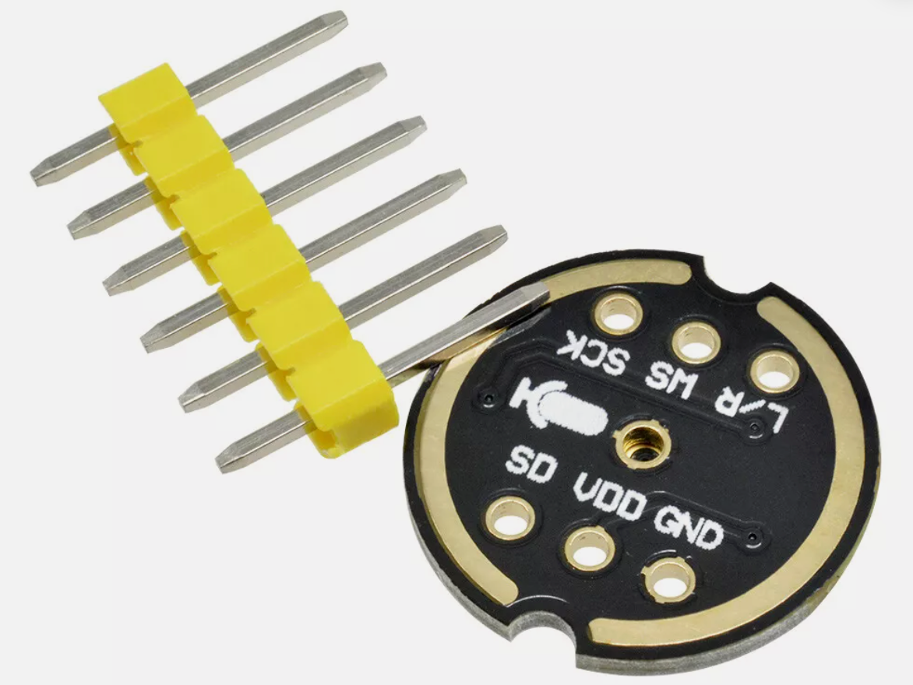
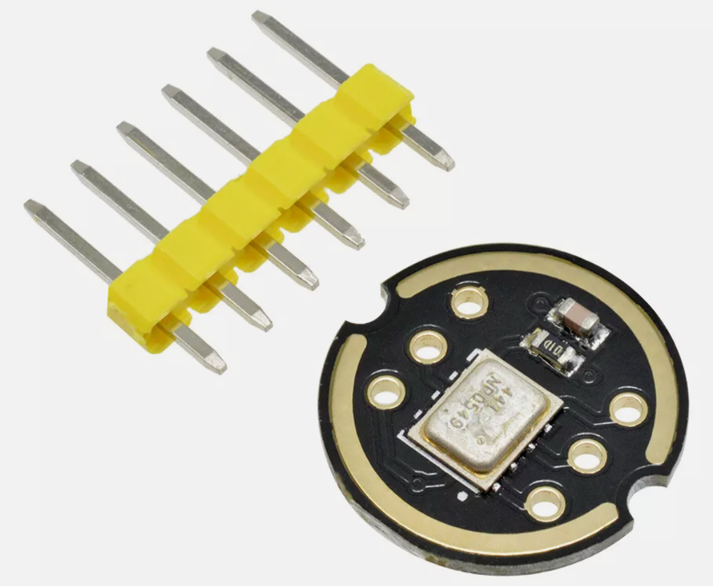
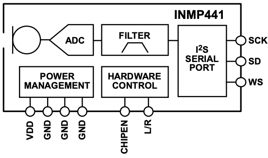
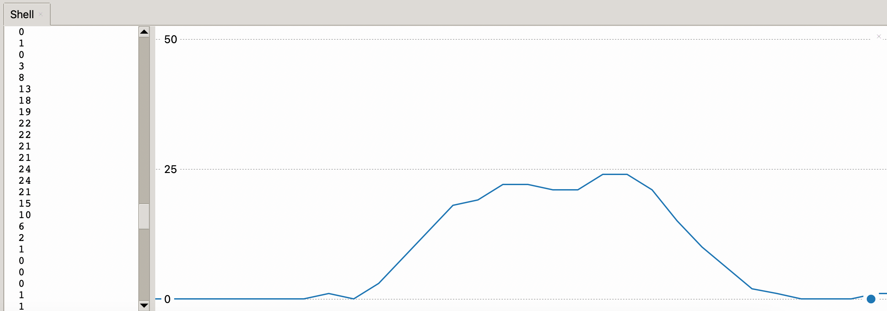

INMP441 Microphone

The INMP441 is a low-cost ($3) high-performance, low power, digital-output, omnidirectional MEMS microphone with a bottom port. The complete INMP441 solution consists of a MEMS sensor, signal conditioning, an analog-to-digital converter, anti-aliasing filters, power management, and an industry-standard 24-bit I²S interface. The I²S interface allows the INMP441 to connect directly to digital processors, such as DSPs and microcontrollers, without the need for an audio codec in the system.
The INMP441 uses a digital MEMS (Micro-Electro-Mechanical System) microphone with an I2S interface. According to its specifications:
The INMP441 has a relatively flat frequency response across the audible spectrum: - Frequency response range: 20 Hz to 20 kHz - Sensitivity: -26 dBFS (decibels relative to full scale) - Signal-to-Noise Ratio (SNR): 61 dBA - Omnidirectional pickup pattern
The microphone has a relatively flat response in the mid-range frequencies, with some slight roll-off at the very low end (below 100 Hz) and high end (above 10 kHz). The flatness of the response in the crucial speech range (approximately 300 Hz to 3 kHz) makes it well-suited for voice applications.
The INMP441 is popular for use with microcontrollers like the Raspberry Pi Pico (as seen in your code) because:
- It has a digital I2S output that can be directly connected to microcontrollers
- It has good noise performance for its size and cost
- It requires minimal external components to operate
This is why it's a good choice for your sound spectrum analyzer project, as it provides reliable audio input across the frequency range you're visualizing (0-2500 Hz). The microphone should capture the frequencies in your target range with reasonable accuracy.
Connections
Warning
The voltage is 1.62 MIN to 3.63 (MAX). Do not use 5 volts! Use the 3.3 volt power rail.

eBay listing for under $3 (USD).
Connections
| Pin | Label | Description |
|---|---|---|
| 1 | SCK | Serial-Data Clock for I²S Interface |
| 2 | SD | Serial-Data Output for I²S Interface. This pin tri-states when not actively driving the appropriate output channel. The SD trace should have a 100 kΩ pulldown resistor to discharge the line during the time that all microphones on the bus have tri-stated their outputs. |
| 3 | WS | Serial Data-Word Select for I²S Interface |
| 4 | L/R | Left/Right Channel Select. When set low, the microphone outputs its signal in the left channel of the I²S frame. When set high, the microphone outputs its signal in the right channel. |
| 5 | VDD | Power, 1.8 V to 3.3 V. This pin should be decoupled to Pin 6 with a 0.1 μF capacitor. |

I²S DATA INTERFACE
The slave serial-data port’s format is I²S, 24-bit, twos complement. There must be 64 SCK cycles in each WS stereo frame, or 32 SCK cycles per data-word.
Display Sound on Thonny

1 2 3 4 5 6 7 8 9 10 11 12 13 14 15 16 17 18 19 20 21 22 23 24 25 26 27 28 29 30 31 32 33 34 35 36 37 38 39 40 41 42 43 44 45 46 47 48 49 50 51 52 53 54 55 56 57 58 59 60 61 62 63 64 65 66 67 68 69 70 71 72 73 74 75 76 77 78 79 80 81 82 83 84 85 86 87 88 89 90 91 92 93 94 95 96 97 98 99 100 101 102 103 | |
Let me explain the 03-connect-test.py script in detail so you can understand how it works. This script is designed to read sound levels from a microphone connected to a Raspberry Pi Pico microcontroller.
What This Code Does
This program connects to a digital microphone (specifically an INMP441 I2S microphone) and continuously measures the sound level in your environment. Think of it like a sound meter that shows you how loud the sounds around you are.
Breaking Code Down Step by Step
1. Importing Libraries
1 2 3 4 5 | |
These are like tool kits the program needs:
- machine.I2S and machine.Pin connect with the microphone hardware
- math helps with calculations like square roots
- struct helps convert data between different formats
- time allows adding pauses in the program
2. Setting Up the Microphone Connection
1 2 3 | |
This tells the program which pins on the Pico to use for connecting the microphone. It's like specifying which socket to plug each wire into.
3. Configuration Settings
1 2 3 4 5 | |
These settings control how the program talks to the microphone:
- SAMPLE_SIZE_IN_BITS = 32: Each sound measurement uses 32 bits of data
- FORMAT = I2S.MONO: We're recording in mono (one channel), not stereo
- SAMPLE_RATE = 16000: We take 16,000 measurements per second
- BUFFER_LENGTH_IN_BYTES = 40000: How much memory to set aside for sound data
4. Initializing the Microphone
1 2 3 4 5 6 7 8 9 10 11 | |
This creates a connection to the microphone using all the settings we defined.
5. The Sound Level Function
1 2 3 4 5 6 7 8 9 | |
This function:
- Creates a container to hold 2048 bytes of sound data
- Fills that container with data from the microphone
- Processes that data to calculate how loud the sound is
The most important part happens here:
1 2 3 4 5 6 7 8 9 | |
This uses the Root Mean Square (RMS) method to calculate sound level:
- For each sound sample, it squares the value
- It adds up all these squared values
- Divides by the number of samples
- Takes the square root of the result
This gives a good representation of the sound energy or volume.
6. The Main Program
1 2 3 4 5 6 7 8 9 10 11 12 13 14 15 16 17 18 19 | |
This is the main loop that:
- Uses a "moving average" to smooth out the readings (averages the last 3 readings)
- Gets a new sound level every 0.1 seconds
- Prints the level so you can see it in the Thonny plotter (a graph in the Thonny IDE)
This technique makes the readings less jumpy and easier to read.
7. Cleanup
1 2 3 4 5 6 | |
This makes sure the program exits cleanly if you stop it with Ctrl+C, properly disconnecting from the microphone.
Real-World Example
Imagine you're using this in a classroom to monitor noise levels:
- When it's quiet, you might see values like 1-5
- Normal talking might show values of 20-40
- A loud shout might spike to 70-90
The program could help you visualize when the room gets too noisy!
To Run This Program
You would:
- Connect the INMP441 microphone to your Raspberry Pi Pico using the specified pins
- Upload this code to your Pico using Thonny or another MicroPython tool
- Run the program and watch the numbers change as you make different sounds
- In Thonny, you can use the plotter view to see a graph of sound levels over time